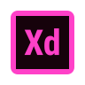
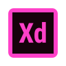

ABOUT ME

北海道出身、神奈川県在住の大学生です。大学ではプログラミングやコンピュータサイエンスを学んでいます。
高校生の時にLife is Tech!さんのキャンプに参加し、プログラミングの楽しさに惹かれて現在の進路を選択しました。
中でもWeb開発が楽しく、現在でも趣味で勉強しています。フロントエンド開発が好きですが、最近はバックエンドの勉強も楽しいと感じています。
2021年12月より、Web制作会社でアルバイトをしています。
SKILLS
「この技術を用いて何かしらのアプリケーションなどを制作したことがあるか」をここに掲載する基準としています。


 

WORKS

研究室のWebサイト
研究室のWebサイトリニューアルに携わりました。「AI×アーティスト」のページを担当しました。

ハッカソンで作成したアプリのソースコード（未完成）
ボーカロイド好きがライブを鑑賞しながら交流できるSNSです。
フロントエンドを担当し、Vue.jsで実装しました。
ハッカソンでジャンクフードを食べた回数を記録するアプリを作成しました。
Ruby on Railsで実装し、フロントエンド部分を担当しました。

Illustratorで部活の勧誘用の資料を作成しました。

Illustratorで部活の勧誘用の資料を作成しました。

Illustratorで納会の資料を作成しました。